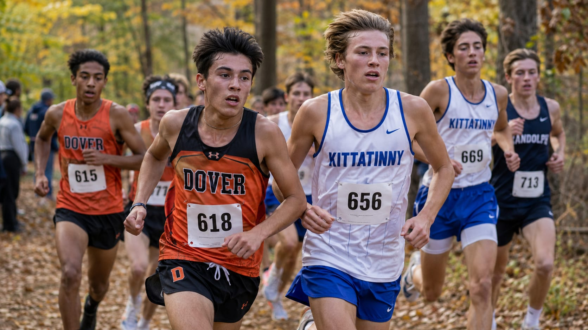

The Northwest Jersey Athletic Conference brings together public and private high schools across Morris, Sussex and Warren counties under the New Jersey State Interscholastic Athletic Association.
Thirty-nine schools compete under the NJAC banner — twenty-seven in Morris County, ten in Sussex County and two in Warren County — spanning large public districts, regional high schools, county vocational-technical schools and independent and parochial academies.
Fall: Football, Boys & Girls Soccer, Field Hockey, Boys & Girls Cross Country, Girls Tennis, Girls Volleyball.
Winter: Boys & Girls Basketball, Wrestling, Boys & Girls Swimming & Diving, Ice Hockey, Indoor Track, Boys & Girls Fencing, Bowling.
Spring: Baseball, Softball, Boys & Girls Lacrosse, Track & Field, Boys Tennis, Boys & Girls Golf, Boys Volleyball.